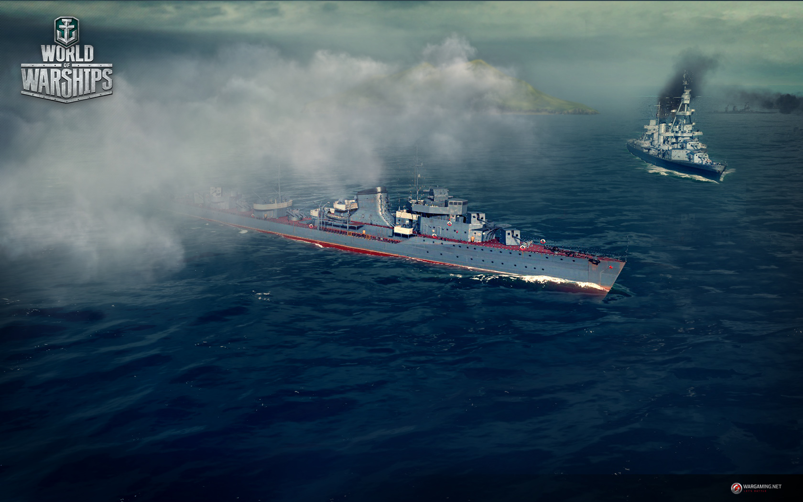
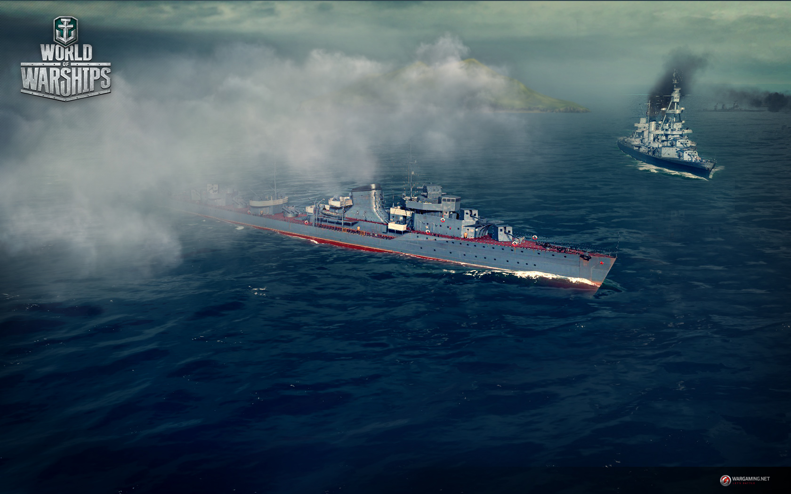

World of Warships is a naval action MMO, dipping into the world of large-scale sea battles of the first half of the twentieth century.
Rpic battles rage across the oceans of the owrld in order ti claim cvictory among team comprised of the greatest representatives from the era of multi-ton marine giants.
 

The navy's light forces. The masters of daring sorties, crafty ambushes, and hunting for aircradt carriers and battleships.
They rely on their speed, maneuverability, and stealth.
Universal ships capable of varied tactics.
Ultimate duelists, destroyer sinkers, a shield against enemy aircraft.
Irreplaceable during defense and attack.
A squadron's main fire power. Giants with the thickest armor and mightiest guns.
They can survive a huge amount of damage and obliterate an opponent with just a couple of well-aimed salvos.

The long arm of the navy. The master if reconnaissance and devastating air strikes.
Their main weapon is deck-based aircraft.
They boast unique gameplay and strategic functions.